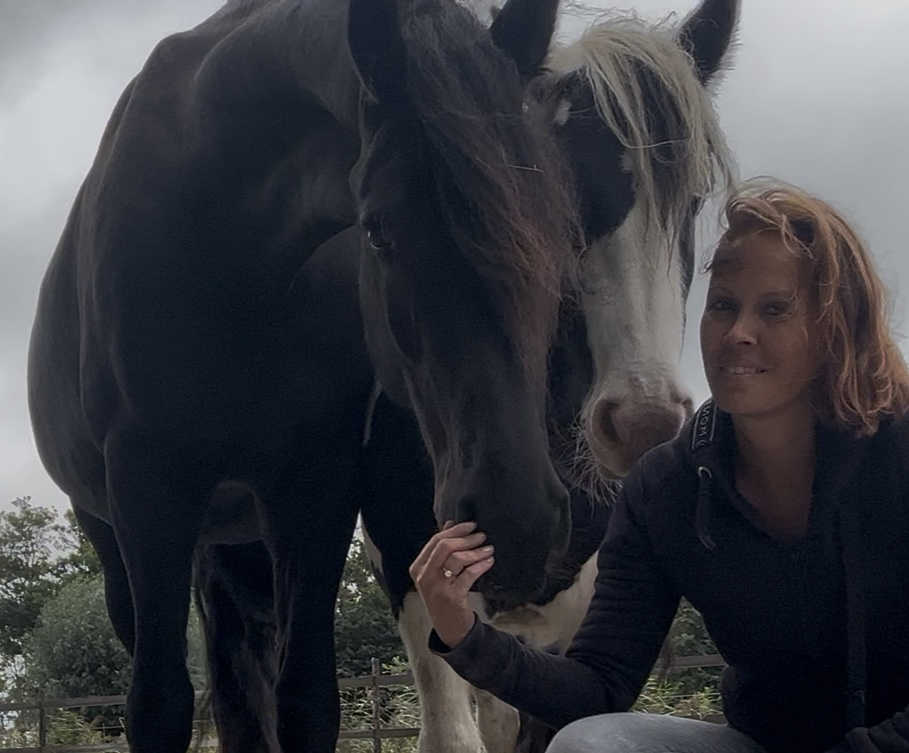
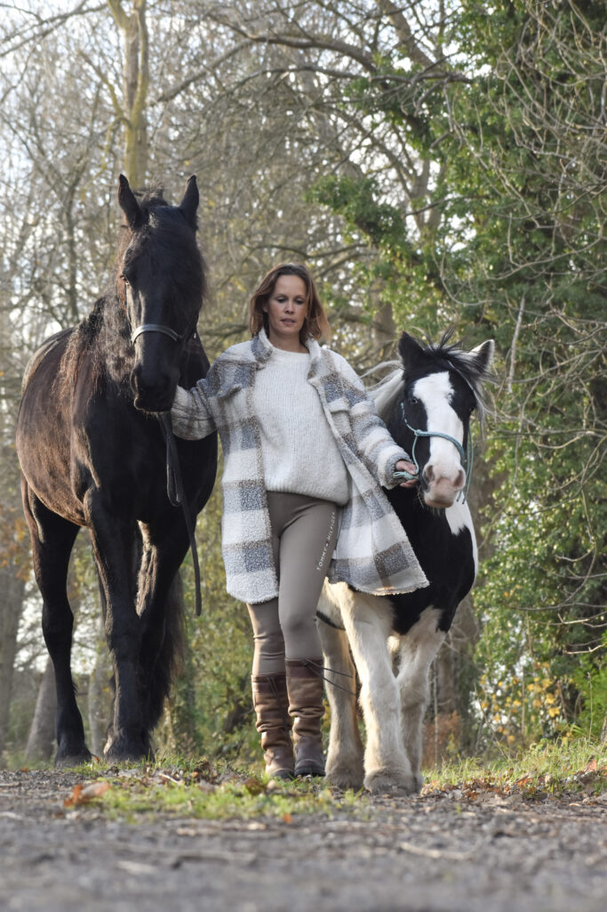

1. Kennismaken
We bespreken rustig waar je tegenaan loopt en of begeleiding met paarden passend voelt.
Rouwbegeleiding en paardencoaching in Alkmaar en Bergen
Je gaat door met je leven, maar merkt dat jij niet meer dezelfde bent. Wat je altijd hielp, werkt niet meer vanzelfsprekend. Je reageert anders, voelt anders en soms weet je niet goed meer wat je nodig hebt.
Ik begeleid volwassenen die na het overlijden van een dierbare vastlopen in zichzelf. Lichaamsgericht, ervaringsgericht en in jouw tempo — waar passend werken we samen met de paarden.

Waar loop je tegenaan?
Natuurlijk mis je degene die er niet meer is. Maar misschien merk je ook dat het overlijden iets heeft veranderd in hoe jij jezelf en het leven ervaart.
Je gaat sneller over je grens. Je lichaam reageert voordat je begrijpt waarom. Iets kleins kan je ineens diep raken. Of je merkt juist dat je vooral doorgaat en weinig voelt.
Soms mis je niet alleen degene die er niet meer is. Je mist ook iets van wie jij was toen diegene er nog was.
En dan kan langzaam een andere vraag ontstaan: wie ben ik nu dit veranderd is?
Wat doet Ramona
In mijn begeleiding is er plek voor wat vaak moeilijk in woorden te vangen is: spanning, gemis, schuldgevoel, boosheid, leegte of het verlangen om weer steviger te staan. Mijn paarden Ollie en Bob reageren eerlijk en zonder oordeel. Dat maakt zichtbaar wat er in jou gebeurt.

Paardencoaching bij rouw en verlies
Een paard merkt spanning, twijfel, rust, afstand en beweging vaak eerder op dan wij er woorden voor hebben. Daardoor kan zichtbaar worden welke patronen, grenzen of kwaliteiten bij jou spelen.
Je hoeft daarvoor niets met paarden te kunnen en je hoeft niet te rijden: we werken vanaf de grond. Er bestaat geen opdracht met één goede uitkomst. We kijken samen naar wat er gebeurt wanneer jij contact maakt, afstand neemt, beweegt, stilvalt of een grens voelt — niet om het gedrag van het paard te verklaren, maar om te onderzoeken wat het bij jou oproept: wat voel je in je lichaam, wanneer blijf je bij jezelf, wanneer raak je jezelf kwijt en waar vertrouw je op wat je voelt?
Tijdens een sessie onderzoek je samen met Ramona en het paard wat er gebeurt. Het paard kan iets zichtbaar maken wat je met je hoofd al lang probeert te begrijpen. Je hoeft niet te rijden, niets te kunnen en niets te bewijzen. Het gaat om inzicht, rust en richting.
Hoe werkt een sessie
De begeleiding is praktisch, lichaamsgericht en afgestemd op wat er in het moment speelt. Er is gesprek, maar de ervaring naast het paard staat centraal.
Veel mensen kunnen goed vertellen wat er gebeurd is, maar vinden het moeilijker om te voelen wat ze nu nodig hebben. Dat hoeft ook niet meteen — we beginnen bij wat zich aandient.
We bespreken rustig waar je tegenaan loopt en of begeleiding met paarden passend voelt.
Tijdens de sessie hoef je niets te presteren. We vertragen, kijken wat er gebeurt en werken zonder oordeel.
Je hoeft niet te rijden en ervaring met paarden is niet nodig. Het paard helpt zichtbaar maken wat jij misschien nog niet kunt verwoorden.
Samen onderzoeken we wat je meeneemt: meer rust, inzicht, grenzen, richting of vertrouwen.
Mijn aanbod
Een kennismakingsgesprek, een 1:1 traject, een kleine groep of begeleiding voor een team — je hoeft nog niet te weten wat bij je past.
Bekijk het volledige aanbodEerste stap
Als je merkt dat je sinds het overlijden van je dierbare steeds opnieuw tegen jezelf aanloopt, kunnen we eerst kennismaken. Je hoeft je verhaal niet compleet te hebben en je hoeft nog nergens voor te kiezen — een paar zinnen over waar je nu tegenaan loopt zijn genoeg.
Daarna kijken we samen of mijn begeleiding bij jou past.